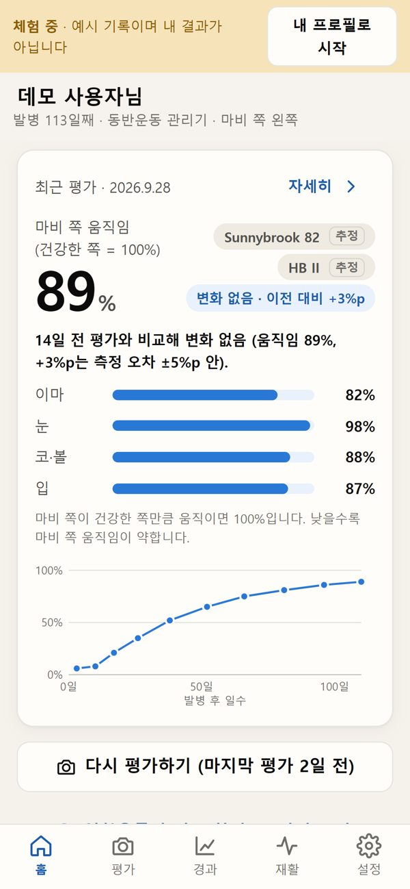
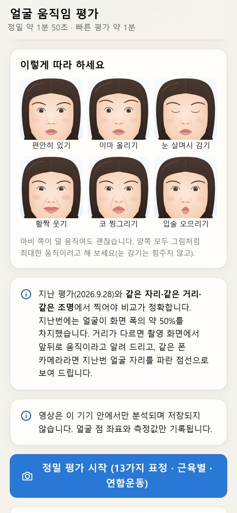
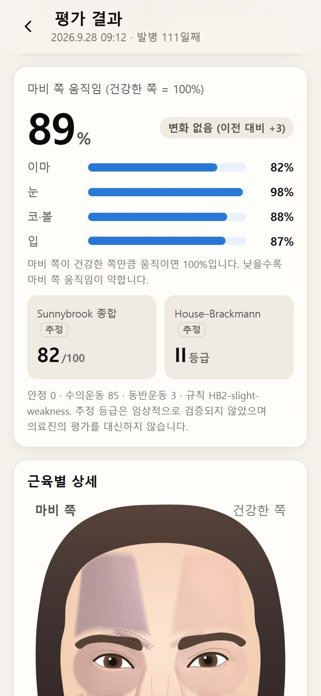
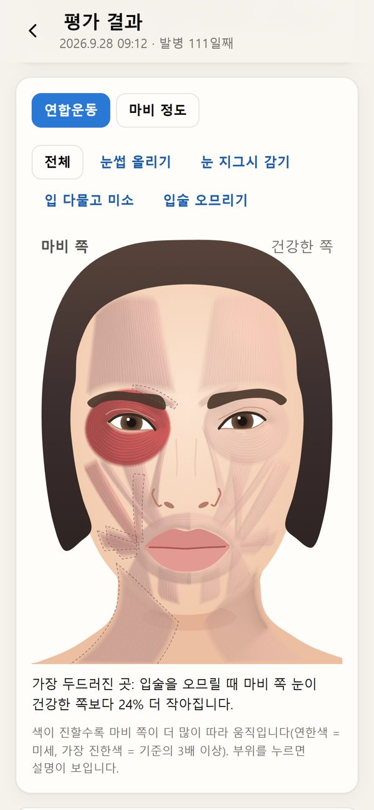
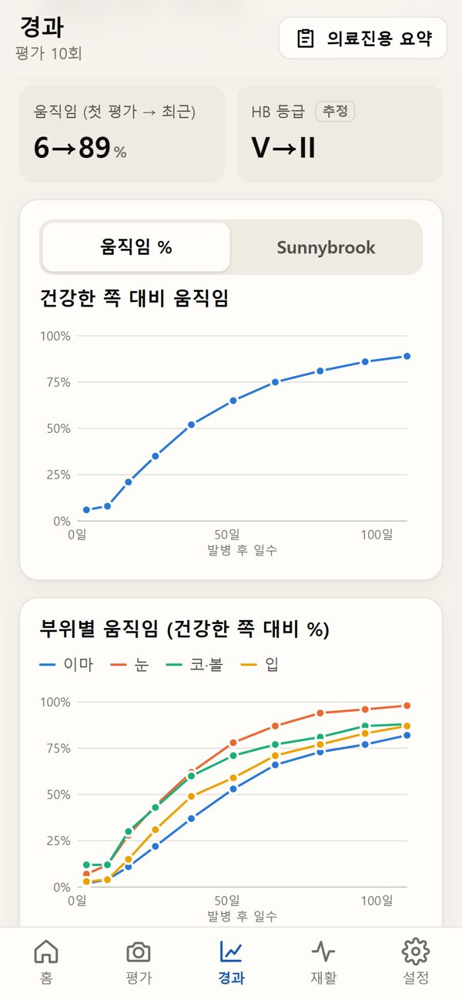
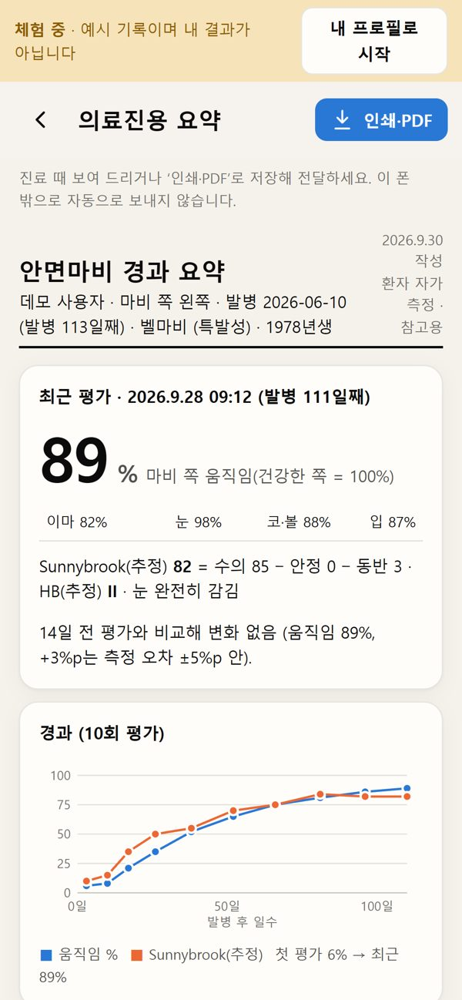
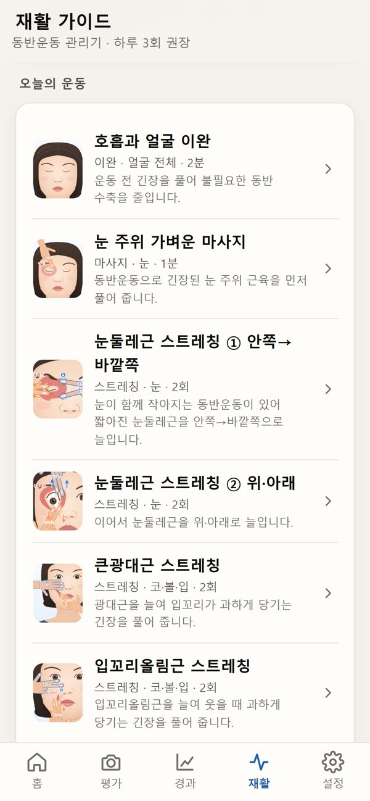
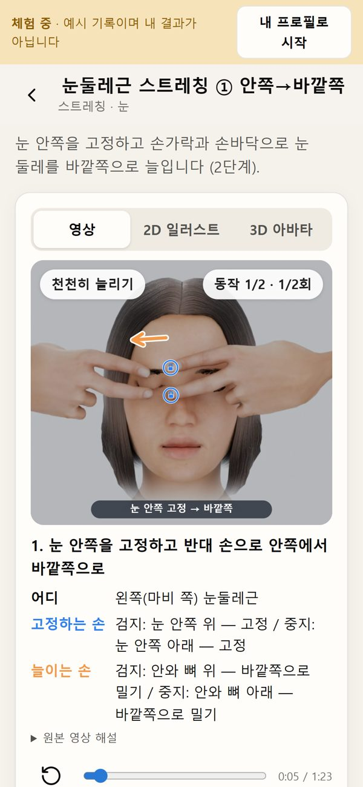
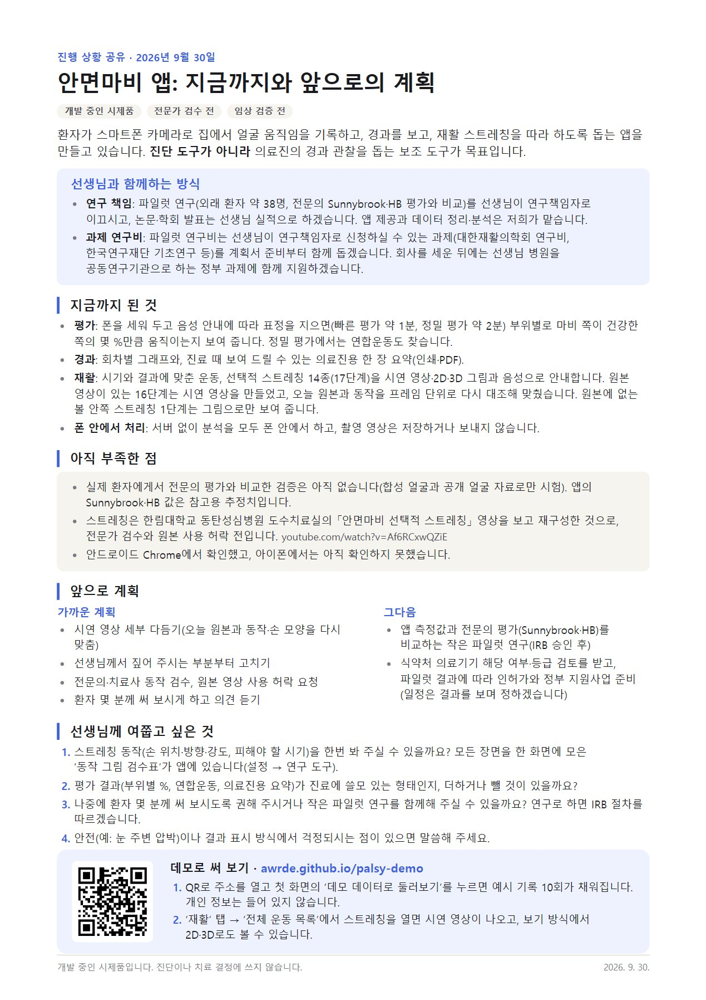

안면마비 케어
스마트폰으로 얼굴 움직임을 기록하고, 경과를 보고, 재활 스트레칭을 따라 하도록 돕는 앱입니다.
개발 중인 시제품전문가 검수 전임상 검증 전
1분 소개 영상
소리 없는 영상입니다. 모든 화면은 예시(데모) 데이터입니다.
주요 화면








옆으로 넘겨 보세요. 한 장으로 모두 보기

지금까지와 앞으로의 계획

계획서 PDF 열기직접 써 보기
첫 화면에서 ‘데모 데이터로 둘러보기’를 누르면 예시 기록 10회가 채워집니다. 개인 정보는 들어 있지 않고, 분석은 폰 안에서만 합니다.
앱 데모 열기- 진단·치료 도구가 아니며, 모든 수치는 참고용 추정치입니다.
- 실제 환자에서 전문의 평가와 비교한 검증은 아직 하지 않았습니다.
- 스트레칭은 한림대학교 동탄성심병원 도수치료실 「안면마비 선택적 스트레칭」 영상을 보고 재구성했으며, 전문가 검수와 원본 사용 허락 전입니다.